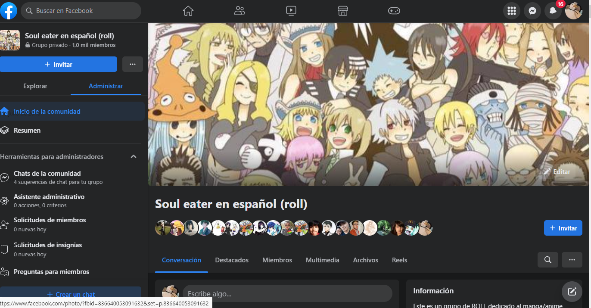
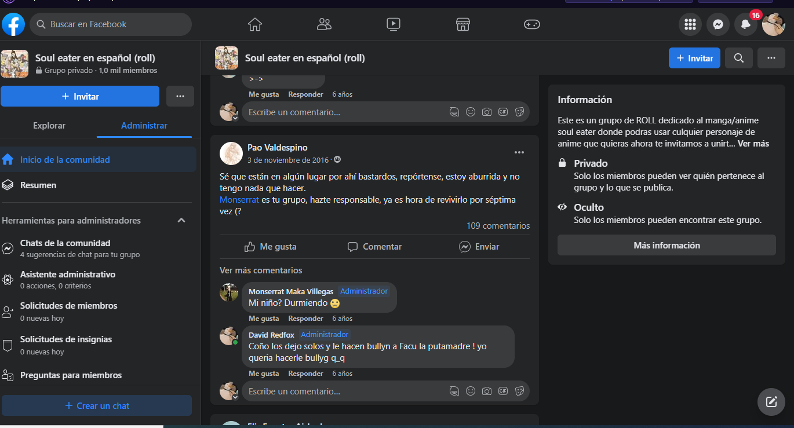
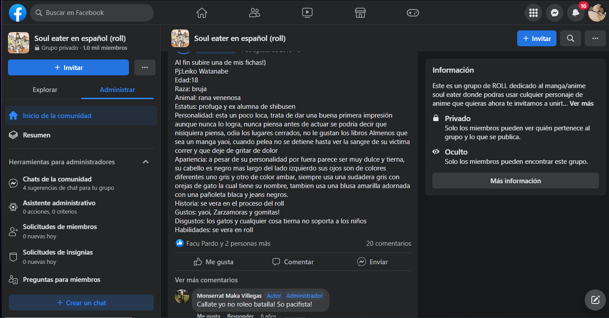
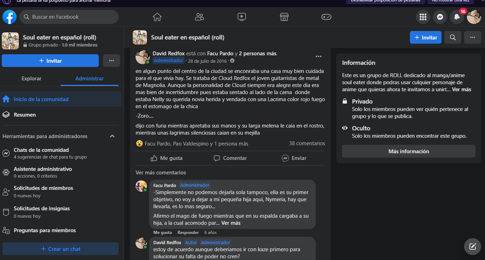
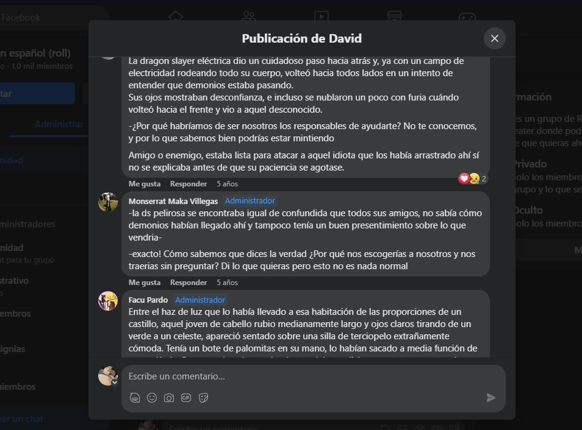

Nuestro grupo de rol a venido a desearte feliz cumple!
Revivi a un muerto que tiene buenos recuerdos, nuestro primer grupos de rol, ¿increible no? buscando algunas capturas realemnte me saque algunas sonrisas, y te invito a hacer lo mismo cuando veas lo que encontre por ahi
Summer cuando tenia tiempo....
Quien diria que Summer nos estaria persiguiendo con el latigo para que rolearamos, encima te regaña por estar aburrida askjdkjsd, lo que mas me mato fue el tu respuesta, me encanta cuando me dices "mi niño" enserio lo amo asjdk
Juro que Leiko no me obligo a hacer esto (AYUDA)
Esto lo hago por mi propia voluntad y no esta un ejercito de ranas venenosas obligandome a escribir esto. ¿A que leiko era una buena chica? ¿A que no seria genial que sea ahora un oraculo de algun dios? ayuda a la pobre leiko a regresar a la vida, era un buen pj (Ya leiko sueltame cumpli con el trato AAAAH)
Fuera de jodas, vi la ficha y no pude evitar extrañarla, era un buen pj kajdas, tal vez podamos regresarla como un oraculo...o la diosa del veneno(?) no se pero podemos hacer cosas, hasta convertirla en demonio
Como que Kaze tenia un hermano?
Buscando las publicaciones... encontre que habia un hermano de kaze, llamado Cloud... ese hermano esta mas muerto que economia venezolana ahora mismo, ademas que no tenia personalidad skjdasd
Ahora mismo Kaze esta haciendo llamadas para ver si Cloud contesta, no se si regresarlo a la vida o no, btw Facu haciendo maldias PUTAS BIBLIAS dios ese hombre tiene una habilidad incrible para escribir jksasjd
Un pequeño recuerdo de roleo
Heeeey, mira nada mas, nashi, Nym, Igneel y Kaze en una mision y por ahi andaba Hana (pejo de laura)... estaba leyendo y estaba divertido el rol, es incrible la cantidad de tiempo que ha pasado desde eso.
Pero si algo puedo sacar de esto, es que Facu y Summer son unos grandes amigos, apesar de años de no hablar volvios a conectar y joder, se siente bonito akjdasd
Este es todo el presente, toca decir adios
Bueno, fue lindo mientras duro no?, recordar algunos pj y roles en general me hizo feliz, espero que a ti tambien te haga feliz, tal vez no sea mucho tal vez no sea la gran cosa, pero me tomo el tiempo asjdasd
Pero antes de irme te dejare pequeñas pistas de lo que puede ser el regalo GORDO (me la pones jsksjsda) asi que, aqui va.
Parte 1
La familia divina, cayó, su belleza resplandeciente se apago. Uno a uno su enemigo como animales los cazó, el tiempo fue el unico que escapó
La dama de blanco y negro entra en negacion, el pequeño conejo un consejo y esperanza le dio. Recuperar a la fuerza lo que perdio, regresar a todo a la normalidad sera su misión